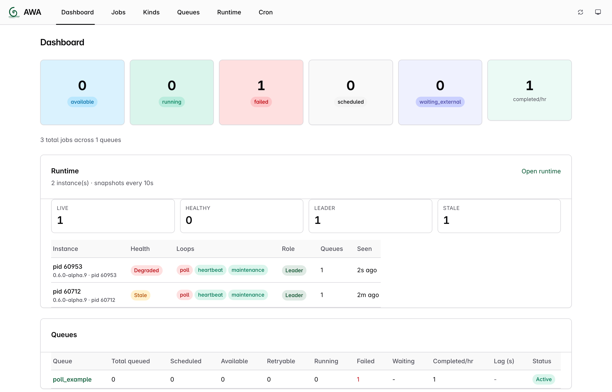
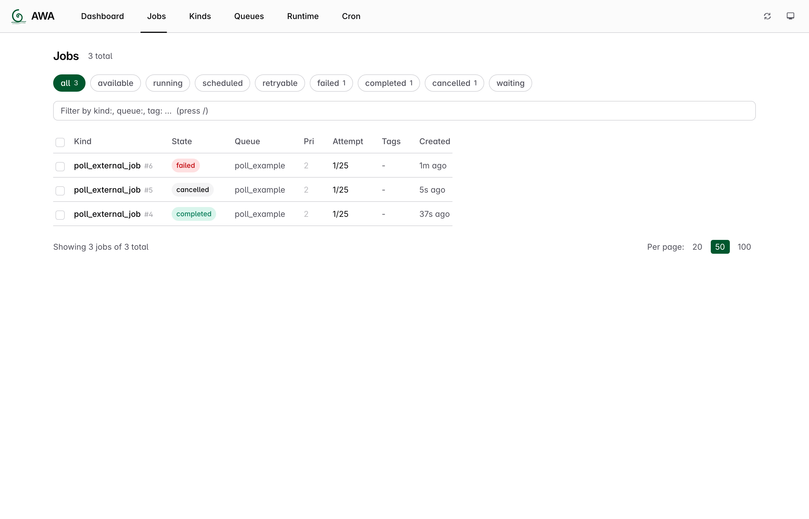
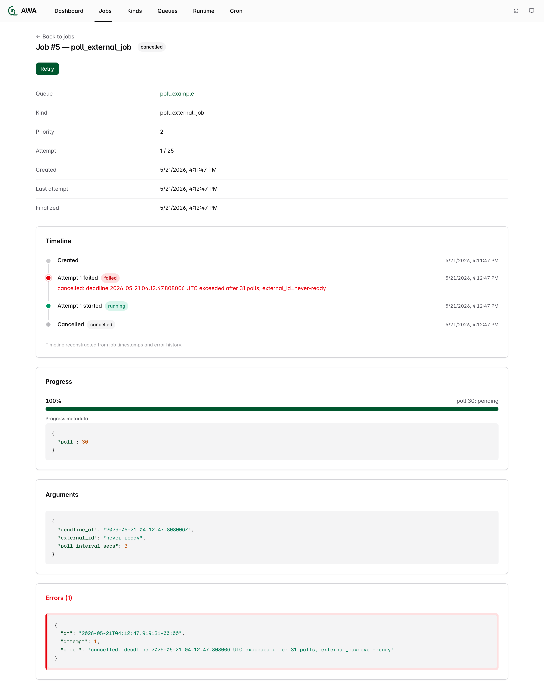

Rust Getting Started¶
This guide takes you from cargo add to a job reaching completed.
Version used in this guide
The install commands pin v0.6.6, the latest stable release. The canonical example is tested against both that release and the code on main; development-only 0.7 surfaces elsewhere on this site are identified by the site banner and stability labels.
Mental Model¶
Before writing code, it helps to know what Awa is doing for you:
- enqueuing persists durable job state in Postgres; if your transaction rolls back, the job disappears too
- workers claim runnable jobs, increment the attempt, and keep the claim alive with heartbeats
- retries, callback waits, and progress updates are persisted in Postgres and exposed as one hydrated job snapshot through the CLI, UI, and admin APIs
- inspection is job-centric: when something looks wrong, dump the job and inspect its current state, progress, callback config, and recorded errors
The important habit is to treat Postgres as the system of record for job execution, not worker memory.
Prerequisites¶
- PostgreSQL running locally or remotely
- Rust toolchain installed
- A database URL exported as
DATABASE_URL
Example local URL:
1. Create a Project¶
cargo new awa-rust-quickstart
cd awa-rust-quickstart
cargo add awa@0.6.6
cargo add sqlx --features runtime-tokio-rustls,postgres
cargo add tokio --features macros,rt-multi-thread,time
cargo add serde --features derive
2. Add a Worker¶
Put this in src/main.rs:
//! A complete AWA Rust quickstart.
//!
//! Run with a PostgreSQL database available at `DATABASE_URL`:
//! `cargo run -p awa --example quickstart`.
use awa::{
admin, insert_with, migrations, Client, InsertOpts, JobArgs, JobResult, JobState, QueueConfig,
};
use serde::{Deserialize, Serialize};
use sqlx::postgres::PgPoolOptions;
use std::{env, time::Duration};
#[derive(Debug, Serialize, Deserialize)]
struct SendEmail {
to: String,
subject: String,
}
impl JobArgs for SendEmail {
fn kind() -> &'static str {
"send_email"
}
}
#[tokio::main]
async fn main() -> Result<(), Box<dyn std::error::Error>> {
let database_url = env::var("DATABASE_URL")?;
let pool = PgPoolOptions::new()
.max_connections(10)
.connect(&database_url)
.await?;
migrations::run(&pool).await?;
let client = Client::builder(pool.clone())
.queue(
"email",
QueueConfig {
max_workers: 2,
..Default::default()
},
)
.register::<SendEmail, _, _>(|args, _ctx| async move {
println!("sending email to {}: {}", args.to, args.subject);
Ok(JobResult::Completed)
})
.build()?;
client.start().await?;
let job = insert_with(
&pool,
&SendEmail {
to: "alice@example.com".into(),
subject: "Welcome".into(),
},
InsertOpts {
queue: "email".into(),
..Default::default()
},
)
.await?;
let deadline = tokio::time::Instant::now() + Duration::from_secs(10);
let mut last_state = job.state;
let job = loop {
let current = tokio::time::timeout_at(deadline, admin::get_job(&pool, job.id))
.await
.map_err(|_| {
std::io::Error::new(
std::io::ErrorKind::TimedOut,
format!(
"timed out waiting for job {} (last state: {})",
job.id, last_state
),
)
})??;
last_state = current.state;
match current.state {
JobState::Completed => break current,
JobState::Failed | JobState::Cancelled => {
return Err(std::io::Error::other(format!(
"job {} ended in terminal state {}",
current.id, current.state
))
.into());
}
_ if tokio::time::Instant::now() >= deadline => {
return Err(std::io::Error::new(
std::io::ErrorKind::TimedOut,
format!(
"timed out waiting for job {} (last state: {})",
current.id, current.state
),
)
.into());
}
_ => tokio::time::sleep(Duration::from_millis(100)).await,
}
};
println!("job {} state = {:?}", job.id, job.state);
client.shutdown(Duration::from_secs(5)).await;
Ok(())
}
This page includes the repository's canonical example verbatim. The docs check compiles it on every change.
3. Run It¶
Expected output is similar to:
4. Inspect the Queue¶
Install the CLI if you want migration/admin/UI commands:
If uv reports that its tool directory is not on PATH, update your shell and
open a new terminal before continuing:
Then inspect what happened:
awa --database-url "$DATABASE_URL" job list --queue email
awa --database-url "$DATABASE_URL" job dump 1
awa --database-url "$DATABASE_URL" job dump-run 1
awa --database-url "$DATABASE_URL" queue stats
awa --database-url "$DATABASE_URL" serve
job dump prints the full job snapshot as JSON. job dump-run prints one attempt-oriented view: the current attempt is hydrated from live storage state, while older attempts are reconstructed from the recorded error history.
The UI starts on http://127.0.0.1:3000 by default.
Production Notes¶
- This quickstart implements
JobArgsby hand to show the trait. To derive it instead, addJobArgsto the#[derive(...)]list (#[derive(Debug, Serialize, Deserialize, JobArgs)]) — theawacrate re-exports the derive macro, so no extra dependency is needed. Client::start()spawns background tasks and returns immediately. Your service should usually stay alive until it receives a shutdown signal.Client::shutdown(Duration)is the graceful drain path. Set your container or process shutdown timeout slightly above that duration.- If you only need to enqueue jobs from Rust, depend on
awa-modelinstead ofawa. - If your service runs a
tracing-opentelemetrylayer, distributed tracing is automatic: enqueues capture the current span's context and the worker'sjob.executespan continues that trace (retries link back instead — see Distributed tracing and ADR-039). To propagate onward from a handler (outgoing HTTP headers), use the ambient context —awa_model::trace::current_traceparent()— so the downstream span is a child of the execution span;ctx.traceparent()returns the stored enqueue-site context for inspection.
When enqueueing from a request or service method that already writes app data, use your existing sqlx transaction and pass it to Awa:
let mut tx = pool.begin().await?;
sqlx::query("INSERT INTO orders (id, email) VALUES ($1, $2)")
.bind(order_id)
.bind(email)
.execute(&mut *tx)
.await?;
let job = awa::insert_with(
&mut *tx,
&SendEmail {
to: email.to_string(),
subject: "Order confirmed".into(),
},
InsertOpts {
queue: "email".into(),
..Default::default()
},
)
.await?;
tx.commit().await?;
Routing related jobs to the same shard¶
By default, a queue is strict FIFO per (queue, priority). Operators can opt a contended queue into partitioned FIFO by raising awa.queue_meta.enqueue_shards — order is then preserved within each shard, but not across shards. If your producer enqueues jobs that must be processed in order (per-customer events, sequential workflow steps), pass InsertOpts::ordering_key so they all land on one shard:
use awa::InsertOpts;
let opts = InsertOpts {
queue: "customer-updates".into(),
ordering_key: Some(format!("customer-{customer_id}").into_bytes()),
..Default::default()
};
awa::insert_with(&pool, &UpdateCustomer { customer_id, payload }, opts).await?;
At the default enqueue_shards = 1 the key is ignored. See ADR-025 for the partitioned-FIFO contract and queue configuration for the operator-side knob.
Next¶
- Configuration reference
- Deployment guide
- Migration guide
- Troubleshooting
- Advanced Rust example
- Deadline-bounded polling pattern — poll an external system every X until it's ready or the deadline expires, using
JobResult::Snoozeso polls don't burn attempts.
Dashboard mid-run — three polling jobs in flight (1 failed terminally, 1 scheduled between snoozes, 1 completed).

Jobs list at terminal state — failed (upstream rejected), cancelled (deadline exceeded), completed (upstream ready). All three show attempt 1/25 — Snooze did not consume attempts.

Cancelled job detail — timeline, error message naming the deadline and poll count, progress bar tracking the deadline window, and progress metadata {"poll": 30} proving the per-job counter survived 30 Snooze cycles via ctx.job.progress.
